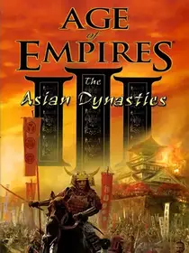

 |
|
| Tiempo de juego | 2m 2s |
| Última actividad | 20/11/2025 16:12:43 |
| Añadido | 20/11/2025 16:12:04 |
| Modificado | 20/11/2025 16:29:29 |
| Estado de finalización | Jugado |
| Librería | Playnite |
| Fuente | |
| Plataforma | PC (Windows) |
| Fecha de lanzamiento | 23/10/2007 |
| Puntuación de la Comunidad | 82 |
| Puntuación de la Crítica | 80 |
| Puntuación de usuario | |
| Género | Real Time Strategy (RTS) Simulator Strategy |
| Desarrollador | Big Huge Games Ensemble Studios |
| Editor | MacSoft Games Microsoft Game Studios |
| Característica | Multiplayer Single Player |
| Enlaces | Official Website 🌟Definitive Edition |
| Tag | |
Si el juego base estableció las reglas y The WarChiefs le agregó sabor, Asian Dynasties vino a romper todo. ¡Es la expansión más rara y creativa de todo AoE!
Los desarrolladores (que acá fueron los capos de Big Huge Games ayudando a Ensemble) dijeron: "¿Saben qué? Vamos a hacer facciones que se jueguen COMPLETAMENTE distinto a los europeos". ¡Y les salió una genialidad!
Acá no se trata solo de nuevas "skins". Jugar con una civilización asiática te obliga a reaprender el juego.
Con tres nuevas campañas centradas en la historia y mitología oriental, The Asian Dynasties es la expansión que demostró que Age of Empires III podía ser infinitamente profundo y variado.